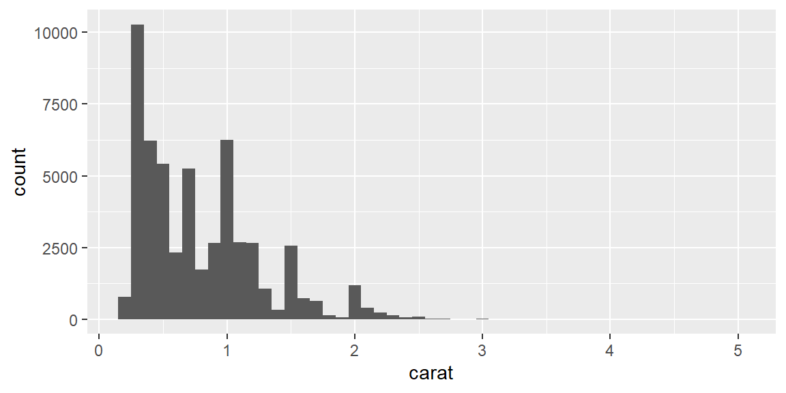

rescale01 = function(x) {
rng = range(x, na.rm = TRUE, finite = TRUE)
(x - rng[1]) / (rng[2] - rng[1])
}
# test it
rescale01(c(-10, 0, 10))[1] 0.0 0.5 1.0function(). Test your function on simple inputs before using it in pipelines.{ } to tell dplyr to look inside the argument for the variable to use. Recognize which arguments require embracing by checking whether the underlying verb uses data‑masking (computations like filter() and summarize()) or tidy‑selection (selectors like select() and rename()).aes() is a data‑masking function you can embrace variables passed to your function so the user can specify which column to plot.{ } to make embracing obvious.One of the most effective ways to reduce duplication and avoid errors is to move repeated code into a function. R for Data Science argues that writing a function has four important benefits: you can give the code a clear name, centralize changes in one place, eliminate copy‑and‑paste mistakes and reuse work across projects. Whenever you find yourself copying and pasting the same code more than twice, it’s time to consider writing a function.
To convert repeated code into a function, identify what changes and what stays the same. A function needs three things: a name, a set of arguments and a body that contains the repeated code. For example, suppose you need to rescale a numeric vector to lie between 0 and 1. You can encapsulate this pattern in a function called rescale01():
rescale01 = function(x) {
rng = range(x, na.rm = TRUE, finite = TRUE)
(x - rng[1]) / (rng[2] - rng[1])
}
# test it
rescale01(c(-10, 0, 10))[1] 0.0 0.5 1.0The example illustrates the basic template name = function(arguments) { body }. By encapsulating the code, you only need to modify the function in one place if you decide to handle infinite values differently.
A vector function takes one or more vectors as input and returns a vector of the same length. Common examples include rescaling or transforming variables. You can use vector functions inside mutate() or other dplyr verbs. For instance, a z‑score function:
z_score = function(x) {
(x - mean(x, na.rm = TRUE)) / sd(x, na.rm = TRUE)
}Because z_score() returns a vector, you can apply it to multiple columns in one step using across() (covered in the next session).
Data‑frame functions take a data frame as input, perform some operation and return a new data frame or summary. The challenge is that dplyr verbs use tidy evaluation: they interpret bare variable names within the context of the data. If you write a function like:
library(tidyverse)
grouped_mean = function(df, group_var, mean_var) {
df |>
group_by(group_var) |>
summarize(mean(mean_var))
}it won’t work because group_by() and summarize() look for columns literally named group_var and mean_var. To solve this problem, embrace your arguments with { }, which tells dplyr to use the value of the argument rather than its name:
grouped_mean = function(df, group_var, mean_var) {
df |>
group_by({{ group_var }}) |>
summarize(mean = mean({{ mean_var }}, na.rm = TRUE), .groups = "drop")
}
# use it
diamonds |>
grouped_mean(cut, carat)# A tibble: 5 × 2
cut mean
<ord> <dbl>
1 Fair 1.05
2 Good 0.849
3 Very Good 0.806
4 Premium 0.892
5 Ideal 0.703Embracing works for both data‑masking arguments (e.g., in filter(), summarize() or arrange()) and tidy‑selection arguments (e.g., in select() or rename()). When in doubt, consult the documentation to see whether an argument uses tidy evaluation and needs embracing.
Another useful pattern is to wrap up a common set of summaries into a helper function. The following summary6() computes the minimum, mean, median and maximum of a variable along with the number of observations and missing values:
summary6 = function(data, var) {
data |>
summarize(
min = min({{ var }}, na.rm = TRUE),
mean = mean({{ var }}, na.rm = TRUE),
median= median({{ var }}, na.rm = TRUE),
max = max({{ var }}, na.rm = TRUE),
n = n(),
n_miss= sum(is.na({{ var }})),
.groups = "drop"
)
}Because it wraps summarize(), you can apply summary6() to grouped data or use it inside other functions. Always drop grouping (.groups = "drop") inside helpers to avoid surprises.
You can also write functions that return plots. For example, repeated calls to ggplot() and geom_histogram() can be wrapped into a histogram() helper:
histogram = function(df, var, binwidth = NULL) {
df |>
ggplot(aes(x = {{ var }})) +
geom_histogram(binwidth = binwidth)
}
# example
diamonds |>
histogram(carat, binwidth = 0.1)
The key is that aes() is a data‑masking function, so you can embrace the variable passed to the function. Users can still add layers to the returned plot with +. You can write other plot helpers, such as a linearity_check() that overlays a smooth curve and straight line to diagnose linear relationships.
Good naming and formatting make your functions readable for future you and others. R doesn’t care about names or white space, but humans do. Prefer verbs for function names and nouns for arguments; clarity beats brevity. For example, impute_missing() and collapse_years() are more informative than f() or my_awesome_function(). Always follow function() with curly braces and indent the body by two spaces. When embracing variables, put spaces inside { } to make it obvious that something special is happening.
{ } around arguments that refer to column names.summary6() or histogram() reduce copy‑and‑paste when you need the same summaries or plots repeatedly.